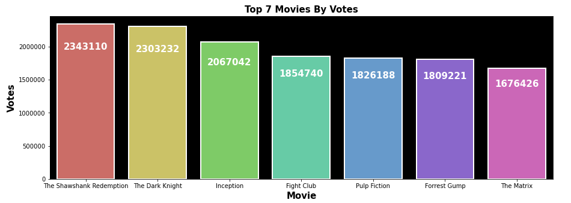
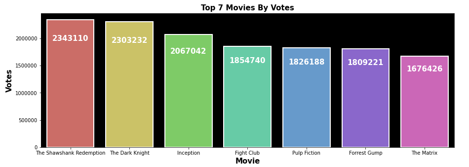

In this project, I have performed EDA to explore an IMDB dataset of movies. The aim of this project was to showcase my abilities with pandas and matplotlib, as well as show best practices in EDA.
import pandas as pd
import numpy as np
import matplotlib.pyplot as plt
import seaborn as sns
data = pd.read_csv('imdb_top_1000.csv')
sns.heatmap(data.isnull())
top_voted = data.sort_values(['No_of_Votes'], ascending = False)
top_voted[['Series_Title','No_of_Votes']][:7]
fig, ax = plt.subplots(figsize=(15,5))
ax.set(facecolor='black')
sns.barplot(x=top_voted['Series_Title'][:7], y=top_voted['No_of_Votes'][:7], palette='hls', edgecolor='white', linewidth=2)
plt.title('Top 7 Movies By Votes', fontweight='bold', fontsize=15)
plt.xlabel('Movie', fontweight='bold',fontsize='15')
plt.ylabel('Votes', fontweight='bold',fontsize='15')
plt.gcf().axes[0].yaxis.get_major_formatter().set_scientific(False)
for p in ax.patches:
x = p.get_x() + p.get_width() / 2
y = p.get_y() + p.get_height() / 1.2
value = '{:.0f}'.format(p.get_height())
ax.text(x, y, value, ha="center", color='white', fontweight='bold', fontsize='15')
plt.show()
 

top_gross = data.sort_values(['Gross'], ascending=False)
top_gross[['Series_Title','Gross']][:7]
fig, ax = plt.subplots(figsize=(21,8))
ax.set(facecolor='black')
sns.barplot(x=top_gross['Series_Title'][:7], y=top_gross['Gross'][:7], palette='hls', edgecolor='white', linewidth=2)
plt.title('Top 7 Movies By Gross', fontweight='bold',fontsize='15')
plt.xlabel('Movie', fontweight='bold',fontsize='12')
plt.ylabel('Votes', fontweight='bold',fontsize='12')
plt.gcf().axes[0].yaxis.get_major_formatter().set_scientific(False)
for p in ax.patches:
x = p.get_x() + p.get_width() / 2
y = p.get_y() + p.get_height() / 1.2
value = '{:.0f}'.format(p.get_height())
ax.text(x, y, value, ha='center', color='white', fontweight='bold', fontsize=15)
plt.show()
top_gross_dir = data.groupby(['Director'])['No_of_Votes'].sum().reset_index()
top_gross_dir.columns = ['Director','Cumulative Movie Votes']
top_7_rated_dir = top_gross_dir.sort_values(by = 'Cumulative Movie Votes', ascending=False).head(7).reset_index().drop('index', axis=1)
fig, ax = plt.subplots(figsize=(15,5))
ax.set(facecolor='black')
sns.barplot(x=top_7_rated_dir['Director'], y=top_7_rated_dir['Cumulative Movie Votes'], palette='hls', edgecolor='white', linewidth=2)
plt.title('Top 7 Directors By Cumulative Movie Votes', fontweight='bold',fontsize='15')
plt.xlabel('Director', fontweight='bold',fontsize='12')
plt.ylabel('Cumulative Movie Votes', fontweight='bold',fontsize='12')
plt.gcf().axes[0].yaxis.get_major_formatter().set_scientific(False)
for p in ax.patches:
x = p.get_x() + p.get_width() / 2
y = p.get_y() + p.get_height() / 1.2
value = '{:.0f}'.format(p.get_height())
ax.text(x, y, value, ha='center', color='white', fontweight='bold',fontsize=14)
plt.show()
fig, ax = plt.subplots(figsize=(10,6))
ax.set(facecolor='black')
sns.countplot(x=data['Certificate'], order=data['Certificate'].value_counts().index, palette='hls')
plt.title('Movies By Certificates', fontsize=15, fontweight='bold')
plt.xlabel('Certificate', fontsize=12, fontweight='bold')
plt.ylabel('Number of Movies', fontsize=12, fontweight='bold')
plt.xticks(rotation=45)
for p in ax.patches:
x = p.get_x() + p.get_width() / 2
y = p.get_y() + p.get_height() + 2
value = '{:.0f}'.format(p.get_height())
ax.text(x, y, value, ha='center', color='white', fontweight='bold')
plt.show()
genre=[]
for x in data['Genre']:
for y in x.split(','):
genre.append(y.strip().lower())
from collections import Counter
count = Counter(genre)
count = count.most_common()
top_genre = pd.DataFrame(count, columns=['Genre, Count'])
top_genre.head(10)
fig, ax=plt.subplots(figsize=(10,6))
ax.set(facecolor='black')
sns.barplot(x=top_genre['Count'][:10], y=top_genre['Genre'][:10], palette='hls')
plt.title('Top 10 Genres', fontsize=15, fontweight='bold')
plt.xlabel('Movies', fontsize=12, fontweight='bold')
plt.ylabel('Genre', fontsize=12, fontweight='bold')
for p in ax.patches:
x = p.get_x() + p.get_width() -30
y = p.get_y() + p.get_height() - 0.25
value = '{:.0f}'.format(p.get_width())
ax.text(x, y, value, ha='center', color='white', fontweight='bold',fontsize=14)
plt.show()
top_rated_movie = data.groupby(['Series_Title'])['IMDB_Rating'].sum().reset_index()
top_rated_movie.columns = ['Movie','Rating']
top_rated_movie = top_rated_movie.sort_values(by = 'Rating', ascending=False).reset_index().drop('index', axis=1)
top_rated_movie.drop([0,0], inplace=True)
top_rated_movie[:10]
fig, ax=plt.subplots(figsize=(10,6))
ax.set(facecolor='black')
sns.barplot(x=top_rated_movie['Movie'][:10], y=top_rated_movie['Rating'][:10], palette='hls')
plt.title('Top 10 Rated Movies', fontsize=15, fontweight='bold')
plt.xlabel('Movies', fontsize=12, fontweight='bold')
plt.ylabel('Genre', fontsize=12, fontweight='bold')
plt.xticks(rotation=90)
plt.ylim([8.5, 9.5])
plt.show()